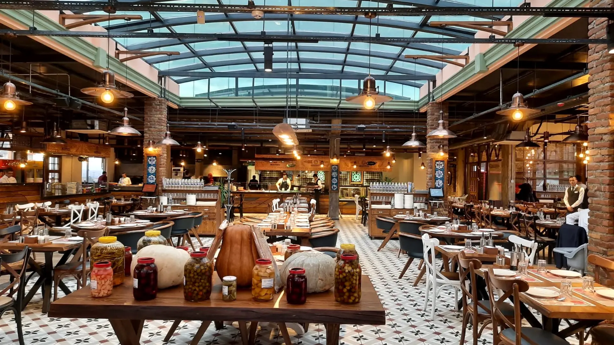
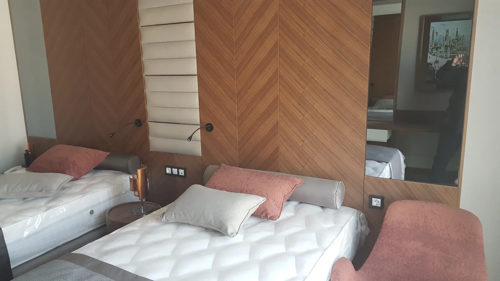
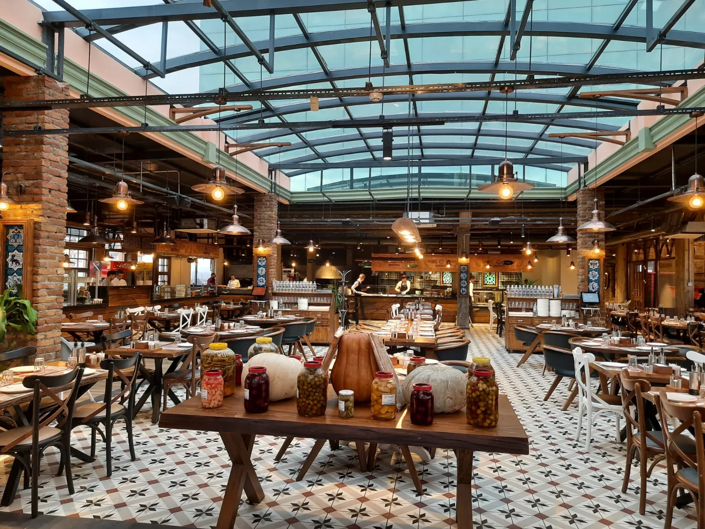
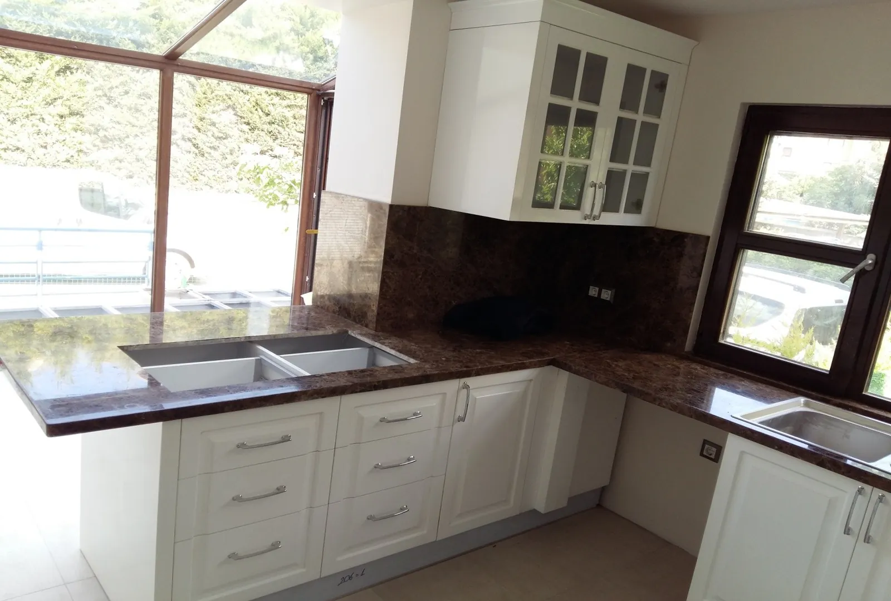
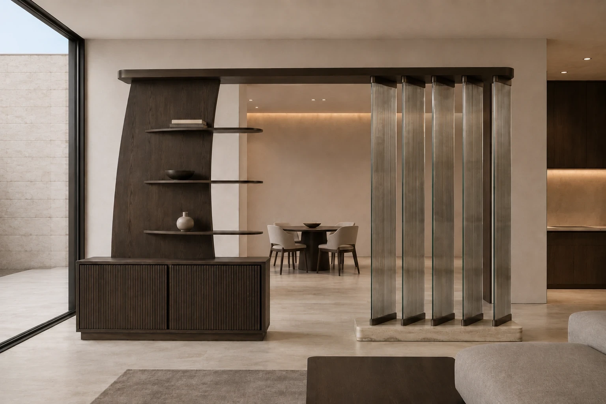
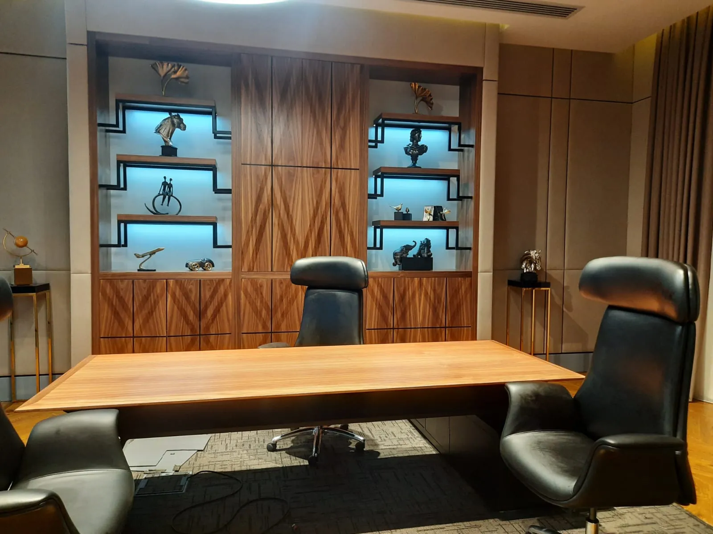

أثاث المكان، من الرسم حتى التركيب.
نقدّم الدعم المعماري ونصمّم الأثاث لمشاريع الفنادق والمطاعم والمقاهي والفلل والمطارات والمكاتب، ونصنّعه في مصانعنا، ونركّبه في الموقع. جهة واحدة يتعامل معها المعماري والمستثمر والمقاول.
المشاريع التي نعمل عليها
لكل قطاع أعباؤه الخاصة: غرفة الفندق تستقبل مئات النزلاء سنوياً، وكرسي المطعم يُسحب عشرات المرات يومياً، ومقعد المطار لا يخلو أبداً. لذلك نصمّم الأثاث وفق الحِمل الفعلي للاستخدام.

الفنادق والمنتجعات
أثاث الغرف والردهة والمطعم والبار والمساحات العامة. من الغرفة النموذجية حتى المنشأة كاملة.
المزيد
المطاعم والمقاهي
توزيع الجلسات، والبار، ومحطات الخدمة، والمساحات الخلفية. مصمّمة للاستخدام الكثيف.
المزيد
الفلل والمساكن
أثاث منزلي متكامل جاهز للتسليم. من فيلا واحدة إلى جميع وحدات المشروع السكني.
المزيد
المطارات والمحطات
مناطق الانتظار، والصالات، ومكاتب تسجيل الوصول والاستعلامات. مصمّمة للاستخدام على مدار الساعة.
المزيد
المكاتب والمساحات التجارية
طوابق الإدارة التنفيذية، والاجتماعات، والاستقبال، والمساحات الاجتماعية. المتاجر وصالات العرض.
المزيدلنتحدّث عن مشروعكم
أرسلوا المخططات أو الصور التصوّرية أو قائمة الغرف، أو أي مستندات متوفرة. نحدّد النطاق معاً ونعود إليكم بخارطة طريق وإطار للعرض السعري.
أرسل موجز المشروعجهة واحدة، سبع مراحل
لكل مرحلة من المعاينة حتى التركيب مُخرَج واضح. نحدّد منذ البداية ما نسلّمه في كل مرحلة.
- 01المعاينة والموجز
- 02المفهوم والدعم المعماري
- 03الرسومات الفنية
- 04العيّنة / النموذج التجريبي
- 05التصنيع
- 06الشحن والخدمات اللوجستية
- 07التركيب والتسليم
لماذا LUYA Projects
تحت سقف واحد
الدعم المعماري وتصميم الأثاث والتصنيع في فريق واحد. ما يُلتزم به في الرسم لا يضيع في الورشة.
لا قوالب جاهزة، بل مكان
تُصنَّع كل قطعة وفق مقاسات المشروع وحركة المستخدمين فيه وكثافة الاستخدام.
ثم الإنتاج الكمّي
قبل الانتقال إلى الإنتاج الكمّي، نقدّم قطعة نموذجية أو غرفة نموذجية للاعتماد.
فريق التركيب ضمن الخدمة
يتولّى فريقنا الشحن والتركيب، ولا يُعدّ العمل منتهياً قبل إغلاق قائمة الملاحظات.
من مشاريعنا المنجزة
من الفنادق إلى المساجد، ومن مقرّ رئيسي في باكو إلى المتاجر: أعمال صمّمناها وصنّعناها وركّبناها في الموقع.
من المجموعة إلى المشروع
يمكن إنتاج تصاميم LUYA Collection على نطاق المشاريع، أو إعادة تفسيرها بما يتناسب مع هوية المشروع. فيما يلي بعض الأمثلة من المجموعة.
لنتحدّث عن مشروعكم
أرسلوا المخططات أو الصور التصوّرية أو قائمة الغرف، أو أي مستندات متوفرة. نحدّد النطاق معاً ونعود إليكم بخارطة طريق وإطار للعرض السعري.